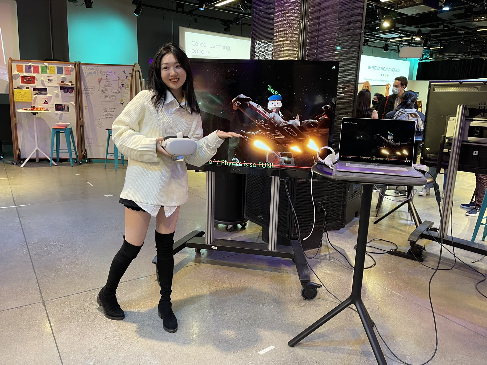

"Physics Wonderland"
An immersive and highly-motivated physics learning experience for teens - a VR sandbox game
2022, Associated with: TC Game Research Lab, Team with: Kaiyu He, Lucky Liu, Wenxuan Li, Yiran Ma, Zhuoer Chen
Problem / Rationale
In the conventional classroom setting, it requires physics learner to build hybrid skills such as 3D spatial imagination, reasoning, mathematical skills, etc. Besides, it requires a long-term self-driven motivation.
Based on my personal experience, learning physics is not usually fun for everyone, especially for beginners. To better define the problem and check if our anticipation is true, our team started this project with interviews and writing user stories.
Based on my personal experience, learning physics is not usually fun for everyone, especially for beginners. To better define the problem and check if our anticipation is true, our team started this project with interviews and writing user stories.
The Empathy Map to Approach Potential Target Users
User Story
After a few rounds of interviews and investigation and reviewing existing products, we painted our target audience figure most likely to be teens who are experiencing hardship in learning physics but enjoy playing games, which helped us to refine the problem analysis in the following categories:
1, They experience hardship in learning physics because of various reasons, such as:
- Some of them are STEM beginners know very little about basic math(computational skills)/geometry.
- Some of them lack of sense of spatial imagination.
- In general, feel difficult to bridge between text/equations/graphs/numbers with the object's dynamic actions and performance in reality.
- In general, bad at reasoning.
- In general, lack of motivation.
- In general, they are outsiders of the learning community.
- Due to the reasons above, for a long while, get very little positive feedback during learning.
2, Why they enjoy playing games:
- Games are interactive. - Video games they play can provide real-time positive feedback to their actions.
- Video game elements in proper design (UI, visual effect, etc.) can provide an intuitive sense of the purposes they serve, making them easy to learn.
- Games provide a richer aesthetic context (music, art theme, story, character, etc.). - Some of them also say, playing online game and joining player communities gives them a sense of belonging.
1, They experience hardship in learning physics because of various reasons, such as:
- Some of them are STEM beginners know very little about basic math(computational skills)/geometry.
- Some of them lack of sense of spatial imagination.
- In general, feel difficult to bridge between text/equations/graphs/numbers with the object's dynamic actions and performance in reality.
- In general, bad at reasoning.
- In general, lack of motivation.
- In general, they are outsiders of the learning community.
- Due to the reasons above, for a long while, get very little positive feedback during learning.
2, Why they enjoy playing games:
- Games are interactive. - Video games they play can provide real-time positive feedback to their actions.
- Video game elements in proper design (UI, visual effect, etc.) can provide an intuitive sense of the purposes they serve, making them easy to learn.
- Games provide a richer aesthetic context (music, art theme, story, character, etc.). - Some of them also say, playing online game and joining player communities gives them a sense of belonging.
Inspiration / Ideation
With a quick research above, we set the project goal to deliver a gamified physics learning experience, which included play rules and goals, a theme, physics related tasks etc.
We know, Physics is a big subject with many domains. Our first task was to narrow it down, focus on specific domains and levels in this project. Considering our target audience are teens, we launched a research on related Physics teaching materials in middle/high school level. With a rough range of prospect learning content, we began brainstorming and searching for related game-liked products. Finally, we locked down the content scope to cover primarily Newton Physics and Basic Electrical Physics. We found relavent products such as games like Besieged, Scrap mechanic, the Red Stone System in Minecraft, and some learning softwares/platforms such as a VR physics lab.
We know, Physics is a big subject with many domains. Our first task was to narrow it down, focus on specific domains and levels in this project. Considering our target audience are teens, we launched a research on related Physics teaching materials in middle/high school level. With a rough range of prospect learning content, we began brainstorming and searching for related game-liked products. Finally, we locked down the content scope to cover primarily Newton Physics and Basic Electrical Physics. We found relavent products such as games like Besieged, Scrap mechanic, the Red Stone System in Minecraft, and some learning softwares/platforms such as a VR physics lab.
Besieged, a PC Sandbox Medieval War Machine Crafting Game
Scrap Mechanics, a PC Sandbox Machine Crafting Survival Game
Minecraft Red Stone System
Circuit-liked Minecraft Red Stone Logic Gates
Research / Solution
So, what do those products have and miss, in terms of approaching our goal? A short but detailed conclusive review was conducted, including features can be learned from and should be avoided, the potential of some certain game mechanics that could help to achieve our goal, etc.
To carry out the accessible solution with detailed specification plan, we launched another round of research covering theories in Learning Science, Game Design, and Implementation Specification (such as coding, software, VR etc., basically a technology pool we could pick from).
After reseaching, discussing, and design brainstorming, finally we described our solution to be like a VR sandbox mechine crafting game with 3 major sections:
- Levels, that each includes a goal and serves as a tutorial and reward, demostrating the property and usage of a specific mechanical part or design. Once player passes it, unlock this part in player's gallery.
- A sandbox scene, where players can freely prototype, test, and play with their own hand-crafted machinery, with the unlocked parts from levels.
- A community, where players can share their crafts or thoughts, contest their crafts with the others, beat leaderboard etc.
In each section, it always includes at least 2 features/phases:
- Crafting: Machine crafting by using given or available parts.
- Testing: Running/activating/maneuvering the cratfed machine.
By our design, we hope it can help conquer the factors behind the hardship learning physics by:
- Decompose a complex physical behavior/motion/design into a series of simpler components.
- Build mapping between components and their corresponding physical properties via craft-test-recraft-retest loops.
- Construct mathematics, geometry, physics basics from easy to hard via levels of tutorials.
- Visualize numbers, equations, and functions during testing.
- Train computational skill by encouraging them to finish a quiz by calculating using generated numbers and equations during testing.
- Structure a fun learning environment via the interactive and immersive embodied experience.
- Keep the passion of learning by granting constant positive feedback as rewards.
- Give a sense of belonging through the player community.
To carry out the accessible solution with detailed specification plan, we launched another round of research covering theories in Learning Science, Game Design, and Implementation Specification (such as coding, software, VR etc., basically a technology pool we could pick from).
After reseaching, discussing, and design brainstorming, finally we described our solution to be like a VR sandbox mechine crafting game with 3 major sections:
- Levels, that each includes a goal and serves as a tutorial and reward, demostrating the property and usage of a specific mechanical part or design. Once player passes it, unlock this part in player's gallery.
- A sandbox scene, where players can freely prototype, test, and play with their own hand-crafted machinery, with the unlocked parts from levels.
- A community, where players can share their crafts or thoughts, contest their crafts with the others, beat leaderboard etc.
In each section, it always includes at least 2 features/phases:
- Crafting: Machine crafting by using given or available parts.
- Testing: Running/activating/maneuvering the cratfed machine.
By our design, we hope it can help conquer the factors behind the hardship learning physics by:
- Decompose a complex physical behavior/motion/design into a series of simpler components.
- Build mapping between components and their corresponding physical properties via craft-test-recraft-retest loops.
- Construct mathematics, geometry, physics basics from easy to hard via levels of tutorials.
- Visualize numbers, equations, and functions during testing.
- Train computational skill by encouraging them to finish a quiz by calculating using generated numbers and equations during testing.
- Structure a fun learning environment via the interactive and immersive embodied experience.
- Keep the passion of learning by granting constant positive feedback as rewards.
- Give a sense of belonging through the player community.
Theories Backing our Solution Design
Early Brainstorm Snapshot on Possible Solutions
Prototype / Implementation
To be honest, the solution design was quite ambitious, therefore we decided to iteratively build a series of prototypes with Agile Development, constantly testing with target audience and collecting feedback. Ultimately, deliver a final version of prototype with minimal features, including:
- Foundational game mechanics for crafting and testing.
- Basic visualization tools.
- A simple equation and a calculation problem.
- Some primal aesthetics.
- A single full playable cycle (level), about elementary Newton Physics.
- Concluding all above, a playable demo in our target platform (Oculus Quest 2).
- Foundational game mechanics for crafting and testing.
- Basic visualization tools.
- A simple equation and a calculation problem.
- Some primal aesthetics.
- A single full playable cycle (level), about elementary Newton Physics.
- Concluding all above, a playable demo in our target platform (Oculus Quest 2).
A Very Early Prototype Demo
Deliverables
You may find related work files on my Google Drive, click here. Our work has been selected to be in the showcase of the Innovation Network Award in TC Columbia.
Project Final Demo
Future Work
Iterate future versions till completing our design solution (3 sections). Constantly communicate with customers, collecting valuable feedback for improvement. Polish things like aesthetics, more level contents, etc.
Team Roles (Not Ranked by Contribution, everyone works the best for the team)
- Chongyang(Me): Team Leader, Project Manager, Unity Developer, Designer, and Researcher
- Kaiyu: Unity Developer, Designer
- Lucky: Designer, Learning Specialist, Documentation, Video Editor
- Wenxuan: Learning Specialist, Researcher, Documentation, Video Editor
- Yiran: Designer, Learning Specialist, Documentation, and Researcher
- Zhuoer: Learning Specialist, Researcher, Documentation, Video Editor
- Kaiyu: Unity Developer, Designer
- Lucky: Designer, Learning Specialist, Documentation, Video Editor
- Wenxuan: Learning Specialist, Researcher, Documentation, Video Editor
- Yiran: Designer, Learning Specialist, Documentation, and Researcher
- Zhuoer: Learning Specialist, Researcher, Documentation, Video Editor
My Major Contributions
- Raised the very first, original project idea.
- Managed and coordinated team collaboration, spliting tasks and goals for each iteration phase.
- Developed prototypes in Unity iteratively.
- Contributed creative design implementations.
- Researched on related theories and existing products.
- Managed and coordinated team collaboration, spliting tasks and goals for each iteration phase.
- Developed prototypes in Unity iteratively.
- Contributed creative design implementations.
- Researched on related theories and existing products.
Highlights

×